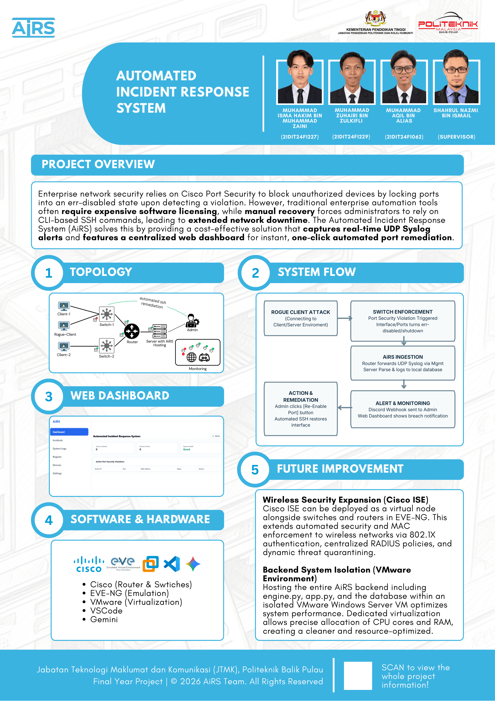

Project Introduction
Automated Incident Response System for Enterprise Infrastructure
Problem Statement
1. Manual Incident Delay
Traditional incident response heavily relies on human intervention. The latency between alert reception, logging into the CLI, and manual mitigation leaves a dangerous window of vulnerability.
2. High Cost of Commercial Software
Commercial enterprise monitoring solutions carry heavy licensing fees, making them inaccessible for SMEs.
Project Poster (A3)

Architecture & System Flow
Infrastructure overview and automated remediation process
1. Topology
2. System Flowchart
Rogue Attack & Switch Enforcement
Trigger: Unknown/Rogue device plugged in.
Action: MAC limit exceeded (>1). Port is set to err-disabled shutdown.
Log Generated: Abnormal Syslog %PORT_SECURITY Violation.
AiRS Ingestion
Transmission: Switch sends UDP Syslog Alert Payload on Mgmt VLAN 100. Router forwards the alert.
Processing: engine.py receives the payload.
Extraction: Switch IP | Interface ID | Rogue MAC Address.
Alert & Monitoring
Database: Server parses and stores record in web dashboard local database, updating History Logs.
Notification: Triggers Real-Time Discord Webhook & Dashboard Alerts.
Action & Remediation
Decision: Admin reviews alert on Web Dashboard or Discord.
Action: Admin clicks the RE-ENABLE PORT button.
Automation: Backend engine initiates automated SSH session. Executes shutdown followed by no shutdown.
Result: Physical Port Restored & Status Marked 'RECOVERED'.
"Even if an attacker connects freely in an unrestricted lab area (Scenario B2), the moment they attempt lateral movement toward restricted core devices or secured ports (Scenario A/B1), the Cisco switch instantly locks the target interface into an err-disabled state.
AiRS immediately flags their MAC address, logs the incident... and dispatches a real-time Discord alert—keeping the port safely isolated until the administrator manually clicks the [Re-Enable Port] button."
Scenario Demonstration
1. Normal Operation
Normal Client Ping (Use Network Normally) without an error.
2. The Intrusion
Rogue Client comes in, detaches the Normal Client Cable, and attaches to theirs.
3. Security Violation
Rogue Client Pings and gets an error which causes MAC violation. The port turns into err-disable (shutdown) since the lab uses a switch with a maximum mac-address of 1.
4. Syslog Generation
Switch generates Syslog and passes it to the router. The server captures it and logs it to the web dashboard & Discord webhook.
5. Rogue Escapes
Rogue Client detaches their cable, attaches it back to the Normal Client, and goes away.
6. Admin Remediation
Admin is notified by the violation via Discord, directly opens the web dashboard, and re-enables the port by clicking a single "re-enable" button via SSH.
7. Network Restored
Normal Client comes back to use the network normally with the ports re-enabled and not shutdown.
1. Normal Operation
Normal Client Ping (Use Network Normally) without an error.
2. Security Decision
The Admin wants to shutdown the specific ports in that lab for security reasons/purposes.
3. Manual Override
Admin opens the Web Dashboard, selects the ports he wants to shutdown, and clicks the shutdown button.
AiRS
Project Access QR
Scan to open the live website on your device
izuhairi.github.io/AiRS